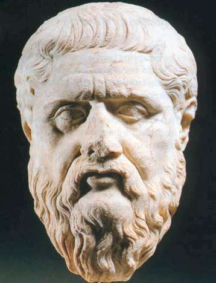

Πλάτωνας

Ο Πλάτωνας ανέπτυξε την θεωρία των ιδεών. Συγκεκριμένα, ο Πλάτωνας διέκρινε στον κόσμο δύο επίπεδα: αφ' ενός το σύνολο των αισθητών πραγμάτων, των οποίων κυρίαρχο γνώρισμα είναι, όπως ισχυρίστηκε ο Ηράκλειτος, οι αδιάλειπτες μεταβολές τους, και αφ' ετέρουτην περιοχή των ιδεών, οι οποίες χαρακτηρίζονται από την σταθερότητα και την μονιμότητα της ύπαρξής τους, που ο Παρμενίδης προέβαλε ως αναγκαίο όρο της γνώσης.